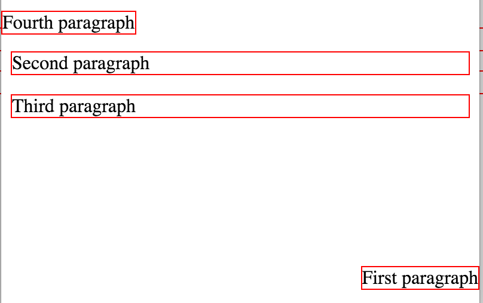
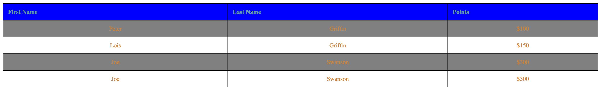
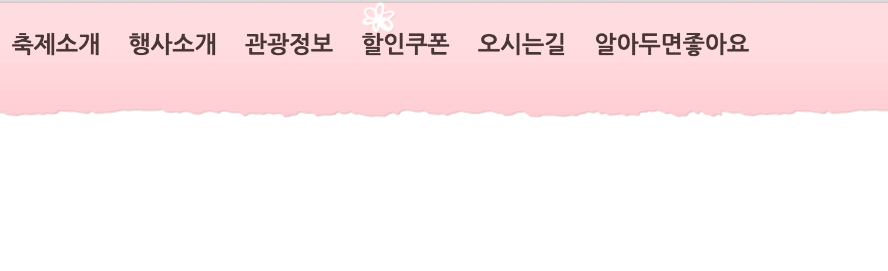

kmu-idparagraph in the begining of this homework (5 point) Answer:
fun. (3 points) Answer: HTML homework is fun
Answer:
- apple
- banana
- apple
- banana


KMU ID:
Name:
This homework helps you to apply CSS skills that you learned during the class with pratical problem sets. The answer should be written in a valid HTML and CSS form that should be rendered in Chrome browser. You can write answers in Korean. The score for this homework will take twice more portion than the first homework. If you have difficulties in understanding the question, please let me know. Slack or E-mail
This homework has to be submitted by , and the solution will be provided during the class. No late submission is allowed this time due to the midterm.
Understanding CSS Concepts
- Describe difference between HTML and CSS with respect to the roles they take in a web page? (5 point)
- CSS stands for Cascading Style Sheet, what does Cascading means? (5 point)
- List three different methods to use CSS with a HTML document and write a brief decription how to use it(5 point)
- For the three different methods discussed at the previous problem, describe pros and cons (advantage and disadvantages) of them comparing with others(10 point)
- When we want to set font style using CSS, we can set generic family and font family. What are the difference between them?(5 point) Which one is recommended to state as a last option to show in a web-page? (5 point)
- When we want to control space of an element, we can use padding and margin. What are the difference between them?(5 point)
- When we set font size using CSS, we can use units of em, %, px. How are they different? (5 point)
- There are four ways to set conditional property for a sequence of elements (parent-child, siblings) - we called it as Combinator in the class. Describe the name of the four combinators with brief descripton and give a short example (10 point)
Answer:
Answer:
Answer:
Answer:
Answer:
Answer:
Make an aesthetic web page using CSS
- Open border-shorthand.html and fill the border-single class to have the second div element to have the same effect with the first div element. You can use only one element in the border-single CSS class. (2 point)
- Open last-paragraph.html and fill in the style tag to make only the last paragraph (the third one) to have the following effects(5 point)
- Make the font color as red
- Make the font to be bold
- Make the font size larger (xx-large)
- Set the font as Arial and its corresponding generic family
- Make all the characters to UPPERCASE
- Using position.html file, add style elements to make the paragraphs shown like below. (8 points)

Hints- For the first and fourth paragraph, you have to use fixed position
- For the second paragraph, you have to specify margin to avoid overlapping with the top most paragraph
- Using table.html file, modify the table to be shown like below. You must follow the rules below.(15 point)

- Specific color, font, border style does not matter unless it is specifically mentioned below
- Create an external css file (file name: table.css) and link it in the table.html
- The table header elements have to be left aligned
- The td elements have to be center aligned
- When a mouse pointer is over a row, it has to change color including the table header row (green, ...)
- Make every 2nd line (line number 2, 4, 6, 8, 10, ...) to have darker color
- Recommends to try various colors - Color Link
-
Create following navigation bar using navigation-bar.html with the following rules - original source: original page. (25 points)
- For the navigation bar background, you have to use
nav-bar-bg.png
file - For the navigation bar, you have to set the width as 100% and the height as 140px
- The fonts size of characters is 20px, the color is #483535, and the font is Nanum Gothic
- When the mouse point is over the link, it should show only one
hover-icon.png
file in a default location(left top) - you don't have to worry about making it same as the original site

- For the navigation bar background, you have to use